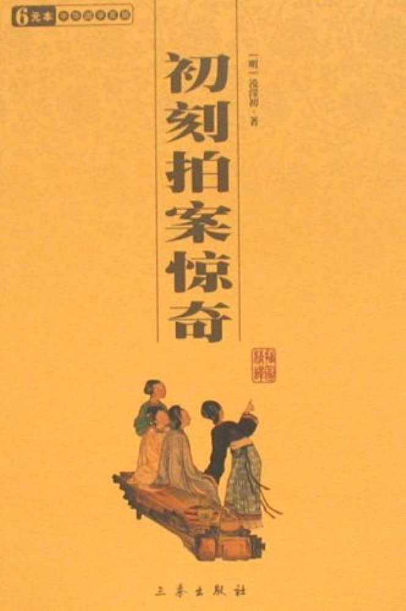

卷二十八金光洞主谈旧变玉虚尊者悟前身#

诗云：
近有人从海上回，海山深处见楼台。
中有仙童开一室，皆言此待乐天来。
又云：
吾学空门不学仙，恐君此语是虚传。
海山不是吾归处，归即应归兜率天。
这两首绝旬，乃是唐朝侍郎白香山白乐天所作，答浙东观察使李公的。乐天一生精究内典，勤修上乘之业，一心超脱轮回，往生净土。彼时李公师稷观察浙东，有一个商客，在他治内明州同众下海，遭风飘荡，不知所止，一月有幸，才到一个大山。瑞云奇花，白鹤异树，尽不是人间所见的。山侧有人出来迎问道：“是何等人来得到此？”商客具言随风飘到。岸上人道：“既到此地，且系定了船，上岸来见天师。”同舟中胆小，不知上去有何光景，个个退避。只有这一个商客，跟将上去。岸上人领他到一个所在，就象大寺观一般。商客随了这人，依路而进。见一个道士，须眉皆白，两旁侍卫数十人，坐大殿上，对商客道：“你本中国人，此地有缘，方得一到。此即世传所称蓬莱山也。你既到此地，可要各处看看去么？”商客口称要看。道士即命左右领他宫内游观。玉台翠树，光采夺目。有数十处院宇，多有名号。只有一院，关锁得紧紧的，在门缝里窥进去，只见满庭都是奇花，堂中设一虚座。座中有褥，阶下香烟扑鼻。商客问道：“此是何处？却如此空锁着？”那人答道：“此是白乐天前生所驻之院。乐天今在中国未来，故关闲在此。”商客心中原晓得白乐天是白侍郎的号，便把这些去处光景，一一记着。别了那边人，走下船来。随风使帆，不上十日，已到越中海岸。商客将所见之景。备细来禀知李观察。李观察尽录其所言，书报白公。白公看罢，笑道：“我修净业多年，西方是我世界，岂复往海外山中去做神仙耶？”故此把这两首绝句回答李公，见得他修的是佛门上乘，要到兜率天宫，不希罕蓬莱仙岛意思。
后人评论：“道是白公脱屣烟埃，投弃轩冕，一种非凡光景，岂不是个谪仙人？海上之说，未为无据。但今生更复勤修精进，直当超脱玄门，上证大觉。后来果位，当胜前生。这是正理。要知从来名人达士，巨卿伟公，再没一个不是有宿根再来的人。若非仙官谪降，便是古德转生。所以聪明正直，在世间做许多好事。如东方朔是岁星，马周是华山素灵宫仙官，王方平是琅琊寺僧，真西山是草庵和尚，苏东坡是五戒禅师，就是死后或原归故处，或另补仙曹。如卜子夏为修文郎，郭璞为水仙伯，陶弘景为蓬莱都水监，李长吉召撰《白玉楼记》，皆历历可考，不能尽数。至如奸臣叛贼，必是药叉、罗刹、修罗、鬼王之类，决非善根。乃有小说中说：李林甫遇道士，卢杞遇仙女，说他本是仙种，特来度他。他两个都不愿做仙人，愿做幸相，以至堕落。此多是其家门生、故吏一党之人，撰造出来，以掩其平生过恶的。若依他说，不过迟做得仙人五六百年，为何阴间有‘李林甫十世为牛九世倡’之说？就是说道业报尽了，辽归本处，五六百年后，便不可知。为何我朝万历年间，河南某县，雷击死娼妇，背上还有‘唐朝李林甫’五字？此却六百年不止了。可见说恶人也是仙种，其说荒唐，不足凭信。”
小子如今引白乐天的故事说这一番话。只要有好根器的人，不可在火坑欲海恋着尘缘，忘了本来面目。待小子说一个宋朝大臣，在当生世里，看见本来面目的一个故事，与看官听一听。诗云：
昔为东掖垣中客，今作西方社里人。
手把杨枝临水坐，寻思往事是前身。
却说西方双摩词池边，有几个洞天。内中有两个洞，一个叫作金光洞，一个叫做玉虚洞。凡是洞中各有一个尊者，在内做洞主。住居极乐胜境，同修无上菩提。忽一日，玉虚洞中尊者来对金光洞中尊者道：“吾佛以救度众生为本，吾每静修洞中，固是正果。但只独善其身，便是辟支小乘。吾意欲往震旦地方，打一转轮回，游戏他七八十年，做些济人利物的事，然后回来，复居于此．可不好么？”金光洞尊者道：“尘世纷嚣，有何好处？虽然可以济人利物，只怕为欲火所烧，迷恋起来。没人指引回头，忘却本来面目，便要堕落轮回道中，不知几劫才得重修圆满？怎么说得‘复居此地’这样容易话？”玉虚洞尊者见他说罢，自悔错了念头。金光洞尊者道：“此念一起，吾佛已知。伽蓝韦驮，即有密报，岂可复悔？须索向阎浮界中去走一遭，受享些荣华富贵，就中做些好事，切不可迷了本性。倘若恐怕浊界汩没，一时记不起，到得五十年后，我来指你个境头，等你心下洞彻罢了。”玉虚洞尊者当下别了金光洞尊者，自到洞中，分付行童：“看守着洞中，原自早夜焚香诵经，我到人间走一遭去也。”一灵真性，自去拣那善男信女、有德有福的人家好处投生，不题。
却说宋朝鄂州江复有个官人，官拜左侍禁，姓冯各式，乃是个好善积德的人。夫人一日梦一金身罗汉下降，产下一子，产时异香满室。看那小厮时，生得天庭高耸，地角方固，两耳垂珠，是个不凡之相。两三岁时，就颖悟非凡。看见经卷上字，恰象原是认得的，一见不忘。送入学中，那名冯京，表字当世。过目成诵，万言立就。虽读儒书，却又酷好佛典，敬重释门，时常暝目打坐，学那禅和子的模样。不上二十岁，连中了三元。
说话的，你错了。据着《三元记》戏本上，他父亲叫做冯商，是个做客的人，如何而今说是做官的？连名字多不是了。看官听说：那戏文本子，多是胡诌，岂可凭信！只如南北戏文，极顶好的，多说《琶琶》、《西厢》。那蔡伯喈，汉时人，未做官时，父母双亡，卢墓致瑞，分府幸他孝廉，何曾为做官不归？父母饿死？且是汉时不曾有状元之名，汉朝当时正是董卓专权，也没有个牛丞相。郑恒是唐朝大官，夫人崔氏，皆有封号，何曾有夫身张生的事？后人虽也有晓得是无微之不遂其欲，托名丑低的，却是戏文倒说崔张做夫妻到底。郑恒是个花脸衙内，撞阶死了，却不是颠倒得没道理！只这两本出色的，就好笑起来，何况别本可以准信得的？所以小子要说冯当世的故事，先据正史，把父亲名字说明白了，免得看官每信着戏文上说话，千古不决。闲话休题。
且说那冯公自中三元以后，任官累典名藩，到处兴利除害，流播美政，护持佛教，不可尽述。后来入迁政府，做了丞相。忽一日，体中不快，遂告个朝假，在寓静养调理。其时英宗皇帝，圣眷方隆，连命内臣问安不绝于道路。又诏令翰院有名医人数个，到寓诊视，圣谕尽心用药，期在必愈。服药十来日，冯相病已好了，却是嬴瘦了好些，柱了杖才能行步。久病新愈，气虚多惊，倦视绮罗，厌闻弦管，思欲静坐养神，乃策杖待步入后园中来。后园中花木幽深之处，有一所茅庵，名曰容膝庵，乃是那陶渊明《归去来辞》中语，见得庵小，只可容着两膝的话。冯相到此，心意欣然，便叫侍妾每都各散去，自家取龙涎香，焚些在博山炉中，叠膝暝目，坐在禅床中蒲团上。默坐移时，觉神清气和，肢休舒畅。徐徐开目，忽见一个青衣小童，神貌清奇，冰姿潇洒，拱立在禅床之右。冯相问小童道：“婢仆皆去，你是何人，独立在此？”小童道：“相公久病新愈，心神忻悦，恐有所游，小童愿为参从。不敢檀离。”公伏枕日久，沉疾既愈，心中正要闲游。忽闻小童之言，意思甚快。乘兴离榻，觉得体力轻健，与平日无病时节无异。步至庵外，小童禀道：“路径不平，恐劳尊重，请登羊车，缓游园圃。”冯相喜小童如此慧黯，笑道：“使得，使得。”
说话之间，小童挽羊车一乘，来到面前。但见：
帘垂斑竹，轮斫香檀。同心结带系鲛绡，盘角曲栏雕美玉。坐姻铺锦褥，盖顶覆青毡。
冯相也不问羊车来历，忻然升车而坐。小童挥鞭在前驭着，车去甚速，势若飘风。冯相惊怪道：“无非是羊，为何如此行得速？”低头前视，见驾车的全不似羊，也不是牛马之类。凭轼仔细再看，只见背尾皆不辨，首尾足上毛五色，光采射人。奔走挽车，稳如磐石。冯相公大惊，方欲询问小童，车行已出京都北门，渐渐路入青霄，行去多是翠云深处。下视尘寰，直在底下，虚空之中。过了好些城郭，将有一饭时侯，车才着地住了。小童前禀道：“此地胜绝，请相公下观。”冯相下得车来，小童不知所向，连羊车也不见了。举头四顾，身在万山之中。但见：
山川秀丽，林麓清佳。出没万壑烟霞，高下千峰花木。静中有韵，细流石眼水涓涓；相逐无心，闲出岭头云片片。溪深绿草茸茸茂，石老苍苔点点斑。
冯相身处朝市，向为尘俗所役，乍见山光水色，洗涤心胸。正如酷暑中行，遇着清泉百道，多时病滞，一旦消释。冯相心中喜乐，不觉拊腹而叹道：“使我得顶笠披蓑，携锄趁犊，躬耕数亩之田，归老于此地。每到秋苗熟后，稼穑登场，旋煮黄鸡，新酿白酒，与邻叟相邀。瓦盆磁瓯，量晴较雨。此乐虽微，据我所见，虽玉印如霜，金印如斗，不足比之！所恨者君恩未报，不敢归田。他日必欲遂吾所志！”
方欲纵步玩赏，忽闻清磬一声，响于林。冯相幸目仰视，向松阴竹影疏处，隐隐见山林间有飞檐碧瓦，栋宇轩窗。冯相道：“适才磬声，必自此出。想必有幽人居止，何不前去寻访？”遂穿云踏石，历险登危，寻径而走。过往处，但闻流水松风，声喧于步履之下。渐渐林麓两分，峰峦四合。行至一处，溪深水漫，风软云闲，下枕清流，有千门万户。但见：
嵬嵬宫殿，虬松镇碧瓦朱扉；
寂寂回廊，凤竹映雕栏玉砌。
玲珑楼阁，干霄覆云，工巧非人世之有。宕畔洞门开处，挂一白玉牌，牌上金书“金光第一洞”。冯相见了洞门，知非人世，惕然不敢进步入洞。因是走得路多了，觉得肢休倦怠，暂歇在门阃石上坐着。坐还未定，忽闻大声起于洞中，如天摧地塌，岳撼山崩。大声方住，狂风复起。松竹低偃，瓦砾飞扬，雄气如奔，顷刻而止。冯相惊骇，急回头看时，一巨兽自洞门奔出外来。你道怎生模样？但见：
目光闪烁，毛色斑搁。剪尾宕谷风生，移步郊园草偃。山前一吼，慑将百兽潜形；林下独行，威使群毛震惊。满口利牙排剑戟，四蹄钢爪利锋芒。
奔走如飞，将至坐侧。冯相怆惶，欲避无计。忽闻金锡之声震地，那个猛兽恰象有人赶逐他的，窜伏亭下，敛足暝目，犹如待罪一般。
冯相惊异未定，见一个胡僧自洞内走将出来。你道怎生模样？但见：
修眉垂雪，碧眼横波。衣披烈火，七幅鲛绡；杖柱降魔，九环金锡。若非固寂光中客，定是楞迦峰顶人。
将至洞门，将锡杖横了，稽首冯相道：“小兽无知，惊恐丞相。”冯相答礼道：“吾师何来，得救残喘？”胡僧道：“贫僧即此间金光洞主也。相公别来无恙？粗茶相邀，丈室闲话则个。”冯相见他说“别来无恙”的话，幸目细视胡僧面貌，果然如旧相识，但仓卒中不能记忆。遂相随而去。
到方丈室中，啜茶已罢。正要款问仔细，金光洞主起身对冯相道：“敝洞荒凉，无以看玩。若欲游赏烟霞，遍观云水，还要邀相公再游别洞。”遂相随出洞后而去。但觉天清景丽，日暖风和，与世俗溪山，迥然有异。须臾到一处，飞泉千丈，注入清溪，白石为桥，斑竹来往。于巅峰之下，见一洞门，门用玻璃为牌，牌上金书“玉虚尊者之洞”。冯相对金光洞主道：“洞中景物，料想不凡。若得一观，此心足矣。”金光洞主道：“所以相邀相公远来者，正要相公游此间耳。”遂排扉而入。
冯相本意，只道洞中景物可赏。既到了里面，尘埃满地，门户寂寥，似若无人之境。但见：
金炉断烬，玉磬无声。绛烛光消，仙肩昼掩。蛛网遍生虚室，宝钩低压重帘。壁间纹幕空垂，架上金经生蠢。闲庭悄悄，芊绵碧草侵阶；幽槛沉沉，散漫绿苔生砌。松阴满院鹤相对，山色当空人未归。
冯相犹豫不决，逐步走至后院。忽见一个行童，凭案诵经。冯相问道：“此洞何独无僧？”行童闻言，掩经离榻，拱揖而答道：“玉虚尊者游戏人间，今五十六年，更三十年方回此洞。缘主者未归，是故无人相接。“金光洞主道：“相公不必问，后当自知。此洞有个空寂楼台，迥出群峰，下视千里，请相公登楼，款歇而归。”遂与登楼。
看那楼上时，碧瓦瓮地，金兽守肩。饰异宝于虚檐，缠玉虬于巨栋。犀轴仙书，堆积架上。冯相正要那卷书来看看，那金光洞主指楼外云山，对冯相道：“此处尽堪寓目，何不凭栏一看？”冯相就不去看书，且凭栏凝望，遥见一个去处：
翠烟掩映，绛雾氤氲。美木交枝，清阴接影。琼楼碧瓦玲珑，玉树翠柯摇曳。波光拍岸，银涛映天。翠色逼人，冷光射目。
其时，日影下照，如万顷琉璃。冯相注目细视良久，问金光洞主道：“此是何处，其美如此？”金光洞主愕然而惊，对冯相道：“此地即双摩词池也。此处溪山，相公多曾游赏，怎么就不记得了？”冯相闻得此语，低头仔细回想，自儿童时，直至目下，一一追算来，并不记曾到此，却又有些依稀认得。正不知甚么缘故，乃对金光洞主道：“京心为事夺，壮岁旧游，悉皆不记。不知几时曾到此处？隐隐已如梦寐。人生劳役，至于如此！对景思之，令人伤感！”金光洞主道：“相公儒者，当达大道，何必浪自伤感？人生寄身于太虚之中，其间荣瘁悲欢，得夫聚散，彼死此生，投形换壳，如梦一场。方在梦中，原不足问；及到觉后，又何足悲？岂不闻《金刚经》云：“一切有为法，如梦幻泡影，如露亦如电，应作如是观。’自古皆以浮生比梦，相公只要梦中得觉，回头即是，何用伤感！此尽正理，愿相公无轻老僧之言！”
冯相闻语，贴然敬伏。方欲就坐款话，忽见虚檐日转，晚色将催。冯相意要告归，作别金光洞主道：“承挈游观，今尽兴而返，此别之后，未知何日再会？”金光洞主道：“相公是何言也？不久当与相公同为道友，相从于林下，日子正长，岂无相见之期！”冯相道：“京病既愈，旦夕朝参，职事相索，自无暇日，安能再到林下，与吾师游乐哉？”金光洞主笑道：“浮世光阴迅速，三十年只同瞬息。老僧在此，转眼间伺侯相公来，再居此洞便了。”冯相道：“京虽不才，位居一品。他日若荷君恩，放归田野，苟不就宫祠微禄，亦当为田舍翁，躬耕自乐，以终天年。况自此再三十年，京已寿登耄耋，岂更削发披缁坐此洞中为衲僧耶？”金光洞主但笑而不答。冯相道：“吾师相笑，岂京之言有误也？”金光洞主道：“相公久羁浊界，认杀了现前身子。竟不知身外有身耳。”冯相道：“岂非除此色身之外，别有身那？”金光洞主道：“色身之外，元有前身。今日相公到此，相公的色身又是前身了。若非身外有身，相公前日何以离此？今日怎得到此？”冯相道：“吾师何术使京得见身外之身？”金光洞主道：“欲见何难？”就把手指向壁间画一圆圈，以气吹之，对冯相道：“请相公观此景界。”
冯相遂近壁视之，圆圈之内，莹洁明朗，如挂明镜。注目细看其中，见有：
风轩水榭，月坞花畦。小桥跨曲术横塘，垂柳笼绿窗朱户遍看他亭，皆似曾到，但不知是何处园圃在此壁间。冯相疑心是障眼之法，正色责金光洞主道：“我佛以正法度人，吾师何故将幻术变现，惑人心目？”金光洞主大笑而起，手指园圃中东南隅道：“如此景物，岂是幻也？请相公细看，真伪可见。”冯相走近前边，注目再者，见园圃中有粉墙小径。曲槛雕栏。向花木深处，有茅庵一所：半开竹牖，低下疏帘。闲阶日影三竿，古鼎香烟一缕。茅庵内有一人，叠足暝目，靠蒲团坐禅床上。冯相见此，心下踌躇。金光洞主将手拍着冯相背上道：“容膝庵中，尔是何人？”大喝一偈道：“五十六年之前，各占一所洞天。容膝庵中莫误，玉虚洞里相延。”向冯相耳畔叫一声：“咄！”冯相于是顿省：游玉虚洞者，乃前身；坐容膝庵者，乃色身。不觉夫声道：“当时不晓身外身，今日方知梦中梦。”口此顿悟无上菩提，喜不自胜。
方欲参问心源，印证禅觉，回顾金光洞主，已失所在。遍视精舍迦蓝，但只见：
如云藏宝殿，似雾隐回廊。审听不闻钟磬之清音，仰视己失峰宕之险势。玉虚洞府，想却在海上嬴洲；空寂楼台，料复归极乐国土。只嶷看罢僧繇画，卷起丹青十二图。
一时廊殿洞府溪山，捻指皆无踪迹，单单剩得一身，俨然端坐后园容膝庵中禅床之上。觉茶味犹甘，松风在耳。鼎内香烟尚袅，座前花影未移。入定一晌之间，身游万里之外。冯相想着境界了然，语话分明，全然不象梦境。晓得是禅静之中，显见宿本。况且自算其寿，正是五十六岁，合着行童说尊者游戏人间之年数，分明己身是金光洞主的道友玉虚尊者的转世。
自此每与客对，常常自称老僧。后三十年，一日无疾而终。自然仍归玉虚洞中去矣。诗曰：
玉虚洞里本前身，一梦回头八十春。
要识古今贤达者，阿谁不是再来人？